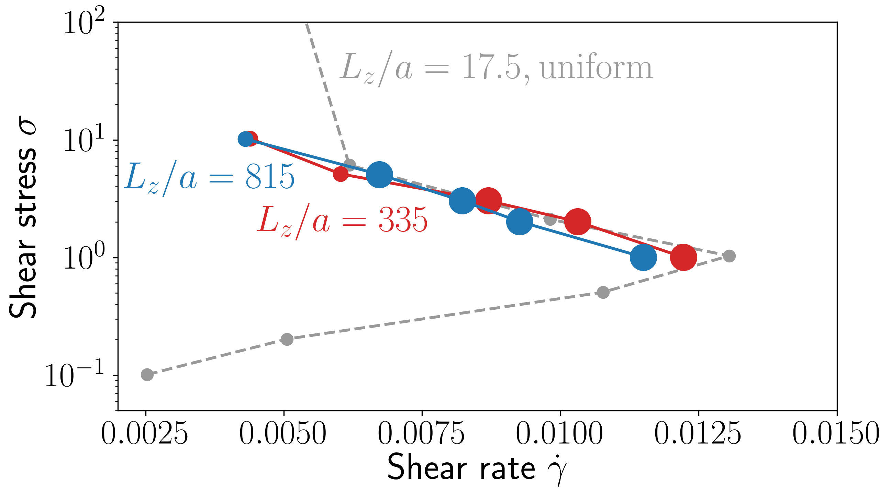

Vorticity banding in shear thickening suspensions
Romain Mari
Laboratoire Interdisciplinaire de Physique, CNRS-Université Grenoble-Alpes
Dept. of Physics, Durham
DAMTP, Cambridge
Shear thickening
260nm silica + polymer brush
in PEG 200

+ polymer brush in PEG 200

Shear thickening
- Newtonian suspending fluid
- Hard particles
- Size $100nm-100\mu m$
- Brownian motion not necessary
- Inertia is not involved (Stokes flow)
- Stabilized (=short-range repulsion)
Suspensions of hard particles
Rate independent rheology
Suspensions of hard particles
Rate independent rheology
But it depends on friction
Thickening scenario
[Seto et al, PRL 2013]
[Heussinger, PRE 2013]
[Wyart and Cates PRL 2013]
[Mari et al, JOR 2014]
Numerical simulations, rate controlled
[Mari et al, JOR 2014]
Thickening scenario (2)
Thickening scenario (2)
Thickening scenario (2)
Thickening scenario (2)
Thickening scenario (2)
Stress-controlled simulations

- S-shaped (discontinuous thickening)
- Arches (shear jamming)
Wyart-Cates model
"Minimal constitutive model" with qualitative features of ST:
$\sigma = \eta \dot\gamma$
$\eta(\phi, f) = \eta_0(\phi_\mathrm{J}(f)-\phi)^{-2}$
$\phi_J(f) = f\phi_\mathrm{J}^{\mu} + (1-f)\phi_\mathrm{J}^0$
$f = f(\sigma)$
$f$: "fraction of frictional contacts"
$f=0$: only lubricated contacts
$f=1$: only frictional contacts
In practice, $f(\sigma) \approx \exp(-C\sigma^{\ast}/\sigma)$
Wyart-Cates model
Comparison with simulations
Flow instabilities
uniform flow curves
Uniform flow unstable

Steady gradient banding
$\sigma^{(1)}_{xy} = \sigma^{(2)}_{xy}$
$p^{(1)}_{yy} = p^{(2)}_{yy}$
Steady gradient banding
$\sigma^{(1)}_{xy} = \sigma^{(2)}_{xy}$
$p^{(1)}_{yy} = p^{(2)}_{yy}$
Impossible!
Steady vorticity banding
$p^{(1)}_{zz} = p^{(2)}_{zz}$
$\dot\gamma^{(1)} = \dot\gamma^{(2)}$
Impossible!
Banding and particle migration
Suspension balance model [Nott & Brady, JFM 1994]:
$\nabla \cdot \Sigma^{\mathrm{p}} = \phi R(\phi) (\mathbf{v}^{\mathrm{p}}-\mathbf{v}^{\mathrm{p+f}})$
Vorticity instability model
Reducing the problem to 1d
$\Sigma \to \sigma_{zz} \equiv \sigma$
$\mathbf{v} \to v_{z} \equiv v$
Conservation relations
Mass conservation:
$\partial_t \phi + \partial_z(\phi v) = 0$
Momentum conservation:
$\partial_z \sigma = - R \phi v$
Stress control:
$L_z^{-1} \int dz\ \sigma = \bar\sigma$
Constitutive model:
Wyart-Cates + linear response:
$\sigma = \eta(\phi, f) \dot\gamma$
$\eta(\phi, f) = \eta_0(\phi_\mathrm{J}(f)-\phi)^{-2}$
$\phi_J(f) = f\phi_\mathrm{J}^{\mu} + (1-f)\phi_\mathrm{J}^0$
$\partial_t f = -\dot\gamma \gamma_0^{-1} \left[f - f^{\ast}(\sigma)\right]$
$f^{\ast}(\sigma) = \exp(-\sigma^{\ast}/\sigma)$
Linear response of the microstructure
Vorticity instability model
Reducing the problem to 1d
$\Sigma \to \sigma_{zz} \equiv \sigma$
$\mathbf{v} \to v_{z} \equiv v$
Conservation relations
Mass conservation:
$\partial_t \phi + \partial_z(\phi v) = 0$
Momentum conservation:
$\partial_z \sigma = - R \phi v$
Stress control:
$L_z^{-1} \int dz\ \sigma = \bar\sigma$
Constitutive model:
Wyart-Cates + linear response:
$\sigma = \eta(\phi, f) \dot\gamma$
$\eta(\phi, f) = \eta_0(\phi_\mathrm{J}(f)-\phi)^{-2}$
$\phi_J(f) = f\phi_\mathrm{J}^{\mu} + (1-f)\phi_\mathrm{J}^0$
$\partial_t f = -\dot\gamma \gamma_0^{-1} \left[f - f^{\ast}(\sigma)\right]$
$f^{\ast}(\sigma) = \exp(-\sigma^{\ast}/\sigma)$
Vorticity instability model
Reducing the problem to 1d
$\Sigma \to \sigma_{zz} \equiv \sigma$
$\mathbf{v} \to v_{z} \equiv v$
Coupled dynamical equations
$\partial_t \phi = R^{-1} \partial^2_z \sigma$
$\partial_t f = -\dot\gamma \gamma_0^{-1} \left[f - f^{\ast}(\sigma)\right]$
Coupling through:
$\sigma = \eta(\phi, f) \dot\gamma$
$\eta(\phi, f) = \eta_0(\phi_\mathrm{J}(f)-\phi)^{-2}$
$\phi_J(f) = f\phi_\mathrm{J}^{\mu} + (1-f)\phi_\mathrm{J}^0$
$f^{\ast}(\sigma) = \exp(-\sigma^{\ast}/\sigma)$
$L_z^{-1} \int dz\ \sigma = \bar\sigma$
Vorticity instability model
Non-dimensionalize with units:
- Time $\eta_0/\sigma^{\ast}$
- Length $L_z$
- Stress $\sigma^{\ast}$
Change of variables:
- $t \to s=\gamma_0^{-1}t$
- $R \to \alpha=\gamma_0^{-1}R$
Coupled dynamical equations
$\partial_s \phi = \alpha^{-1} \partial^2_z \sigma$
$\partial_s f = -\dot\gamma \left[f - f^{\ast}(\sigma)\right]$
Coupling through:
$\sigma = \eta(\phi, f) \dot\gamma$
$\eta(\phi, f) = (\phi_\mathrm{J}(f)-\phi)^{-2}$
$\phi_J(f) = f\phi_\mathrm{J}^{\mu} + (1-f)\phi_\mathrm{J}^0$
$f^{\ast}(\sigma) = \exp(-1/\sigma)$
$\int dz\ \sigma = \bar\sigma$
3 parameters: $\bar\phi$, $\bar\sigma$, $\alpha=L_z^{2}R/(\gamma_0 \eta_0)\gg 1$
Vorticity instability model
$X = X_0 + \delta X e^{ikz + \lambda t}$
Unstable when $\eta \partial_{\sigma} \dot\gamma < -\frac{k^{2}}{\phi \alpha}\partial_{\phi}\eta$
Hopf bifurcation,
$\mathrm{Re} \lambda > 0$ and $\mathrm{Im} \lambda \neq 0$
Instability towards traveling bands
Traveling bands
Stress field along vorticity
Traveling bands
Stress field along vorticity
"Stokesian dynamics" simulations
Instability for: $\eta \partial_{\sigma} \dot\gamma < -\frac{k^{2} \gamma_0}{\phi \alpha}\partial_{\phi}\eta$
Need $L_z/a \gtrsim 100$
Simulations with very large aspect ratio in favor of the vorticity
"Stokesian dynamics" simulations
Uniform flow curve
Comparison with model
Stress field
Friction field
Volume fraction field
Comparison with model
Friction field
Simulation

Model
Stress field
Comparison with model
Friction field
Simulation
Model
Volume fraction field
Two-band state?
Friction field
Simulation
Model
Strain rate
Flow curves
Model
Comparison with model
Simulations
Comparison with model
Simulations
Some open questions
- Two-band state in simulations?
- Some simulation events not captured, role of "noise"?
- Where are the rare, intermittent and chaotic regimes of experiments?
- Boundary conditions (free surfuce, imposed normal stress?)